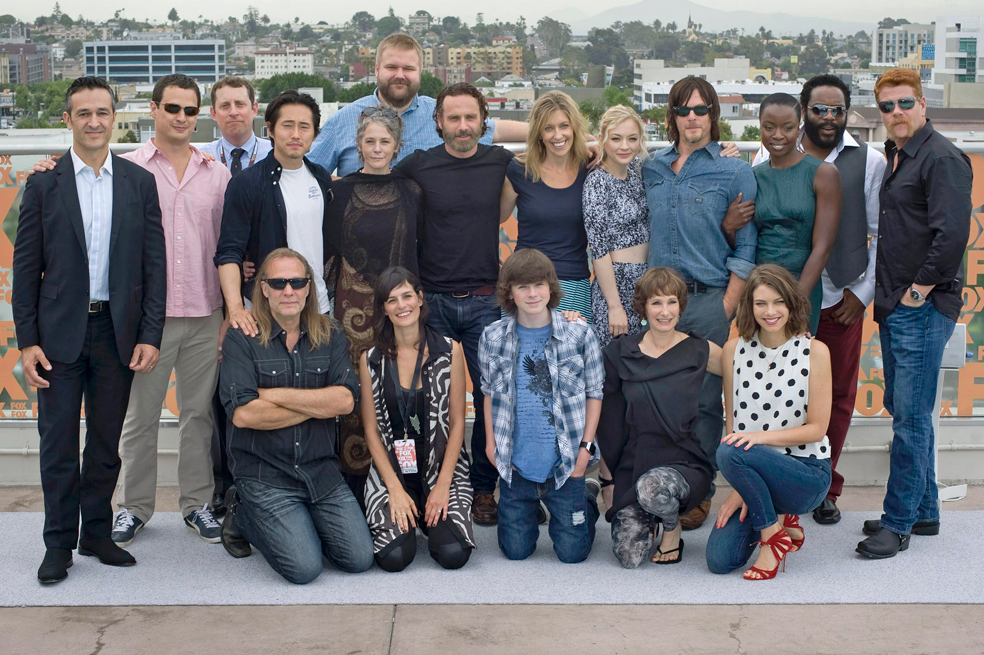

The Walking Dead es una serie de televisión estadounidense de horror posapocalíptico de AMC.
Historia
Esta obra surgió como una serie de cómics creada por el escritor Robert Kirkman, la cual fue publicada bajo el sello de Image Comics, convirtiéndose en su título más exitoso en la empresa debido a que trajo de vuelta a los zombies de una manera nunca antes vista.
El primer número fue lanzado durante el mes de octubre del 2003 y continuó con sus publicaciones hasta el mes de julio del año 2019, siguiendo un ritmo de publicaciones mensuales con un formato de historietas en blanco y negro, muy similar al manga.
La serie cuenta con un total de 193 números, y su popularidad fue tanta que en el año 2019, el estudio AMC adquirió los derechos de la obra para la creación de la serie televisiva, la cual fue un éxito de talla mundial desde sus primeros episodios en la cadena que la produjo.

Inicios en la TV
El primer episodio de la serie se emitió el 31 de octubre del año 2010, exactamente el día en el que se celebra Halloween en Estados Unidos, quedando a la perfección debido a la temática, consiguiendo en su primer día un aproximado de 5.35 millones de televidentes.
Tras el éxito de la primera temporada de la serie, la demanda fue tanta que el estudio AMC tuvo que renovar las siguientes temporadas cada año, algo que no es muy común que suceda en series de ciencia ficción, especialmente con nuevos temas como los zombies.
Actualmente la serie se encuentra en la segunda parte de su décima temporada, donde los pocos sobrevivientes del apocalipsis continúan luchando por la sobrevivencia, y aparentemente lo harán por una temporada más, ya que la onceava se confirmó.

TWD abrió la puerta para que las series y películas de zombies vuelvan a recuperar su gloria en el mundo del entretenimiento en televisión.
Adaptado de: La Verdad.
La serie The Walking Dead esta compuesta de 11 temporadas
- Temporada 1
- (2010-2010) 6 Episodios
- Temporada 2
- (2011-2012) 13 Episodios
- Temporada 3
- (2012-2013) 16 Episodios
- Temporada 4
- (2013-2014) 16 Episodios
- Temporada 5
- (2014-2015) 16 Episodios
- Temporada 6
- (2015-2016) 16 Episodios
- Temporada 7
- (2016-2017) 16 Episodios
- Temporada 8
- (2017-2018) 16 Episodios
- Temporada 9
- (2018-2019) 16 Episodios
- Temporada 10
- (2019-2021) 22 Episodios
- Temporada 11
- (2021-2022) 24 Episodios
Adaptado de: Wikipedia.
Elenco de la serie The Walking Dead
Andrew Lincoln interpretó al personaje principal de la serie, Rick Grimes, hasta su partida durante la novena temporada. Otros miembros del elenco de larga data son Norman Reedus, Melissa McBride, Lauren Cohan, Danai Gurira, Chandler Riggs, Steven Yeun, Christian Serratos, Josh McDermitt, Seth Gilliam, Ross Marquand y Jeffrey Dean Morgan. The Walking Dead es producida por AMC Studios en el estado de Georgia y la mayoría de las filmaciones tienen lugar en los grandes espacios al aire libre de Riverwood Studios, cerca de Senoia (Georgia). Fue adaptada del cómic por Frank Darabont, quien también fue el showrunner de la primera temporada. Sin embargo, conflictos entre Darabont y AMC forzaron su salida de la serie, que actualmente está sujeta a múltiples demandas por parte de Darabont y otros. Después de Darabont, Glen Mazzara, Scott M. Gimple y Angela Kang han servido como showrunners.
Adaptado de: Wikipedia.
¡Suscríbete para ser parte del fandom de TWD!
___________________
Copyright © Evelin Villamil - TallerSW.